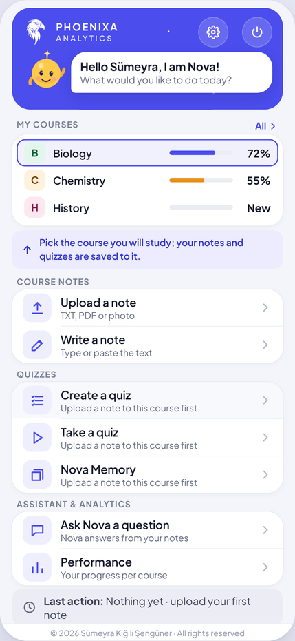
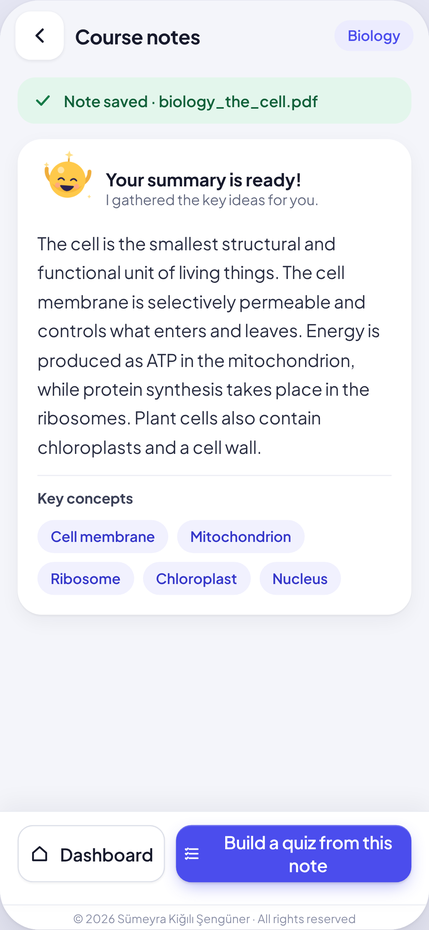
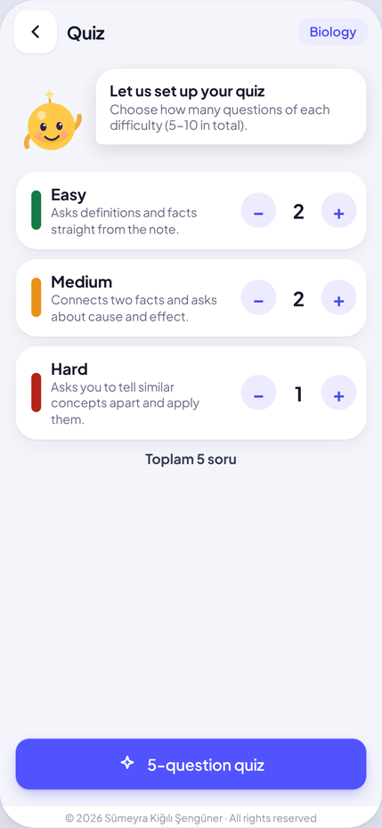
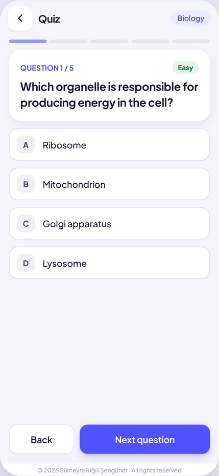
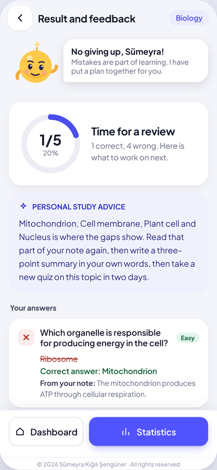
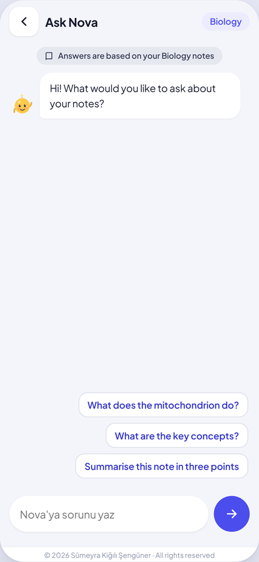
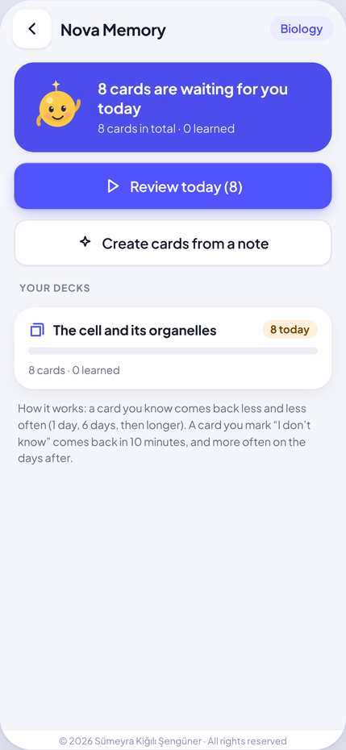
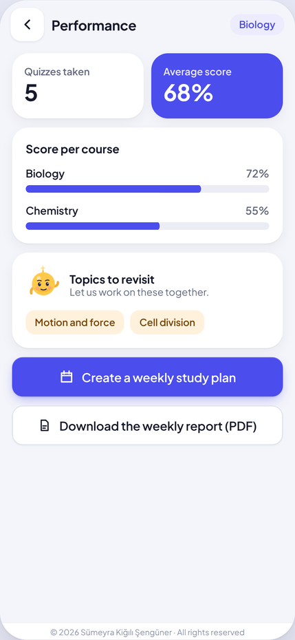

Start here
The presentation →
16 slides in your browser: where Nova starts, the architecture, every workflow and how the quizzes are verified. Arrow keys to move.
Try it
Clickable prototype →
The whole flow on sample data — sign in, upload a note, take a quiz, read the advice. Nothing to install.
Read
The write-up →
What the case brief asked for, the architecture, the API, how a 3B local model is made reliable, security and tests.
Engineering
Decisions →
Why a local model, why n8n holds the logic, how quiz accuracy is defended, and what each choice cost.
The interface








How it fits together
- Flutter owns the screens — one codebase for web and Android, English and Turkish.
- n8n holds the business logic as eight workflows: every request walks through validation, authorisation, the model call and the database write as nodes you can watch execute.
- Ollama runs the language model locally, so course notes never leave the machine.
- MongoDB keeps each student's data apart, and correct answers stay on the server until grading.
- Docker Compose starts all of it with one script that detects the GPU, imports the workflows and warms the model.